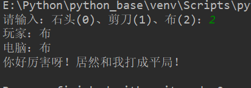

原文出处:本文由博客园博主三国小梦提供。
原文连接:https://www.cnblogs.com/lxy0/p/11291400.html
原文连接:https://www.cnblogs.com/lxy0/p/11291400.html
任务要求：
在控制台中提示输入石头、剪刀、布，按回车键，然后给出游戏结果。
分析：
我们知道在游戏规则中，石头克剪刀，剪刀克布，布克石头。但是这在计算机中并不是很好直接的表示，因此我们分别用0、1、2分别代表游戏中的石头剪刀布。
那么电脑该如何出拳呢？那就该用到python中的一个模块random中的一个方法random.randint()在0~2范围内产生一个随机整数，就表电脑出拳了。
random.randint()的用法如下：
# 首先导入模块
import random
# 调用时传入两个整型数字，返回从1-2中任意一个整型数字
a = random.randint(1,2)
# 打印出1或者2
print(a)
# 再或者,那么b就可能是1-10中的任意一个数字（包括1和10）
b = random.randint(1,10)
print(b)
#在本案例中，我们只要0-2中的任意一个数即可，故
computer = random.randint(0,2)玩家出拳的话，可以从键盘输入0-2中的任意一个数并保存在一个变量中，然后用if语句比较得出结果即可。
代码实现：
import random
# 从键盘获取用户的输入,只能输入0-2中的数字，否则结果会不正确，以后会有升级版
person = input('请输入：石头(0)、剪刀(1)、布(2)：')
# input 返回的是一个字符串类型，randint(0, 2)返回的是int类型，需要把person强制转换成int类型，类型一致才可以比较
person = int(person)
computer = random.randint(0, 2)
# 为了更友好的显示信息
if person == 0:
print('玩家：石头')
elif person == 1:
print('玩家：剪刀')
else:
print('玩家：布')
if computer == 0:
print('电脑：石头')
elif computer == 1:
print('电脑：剪刀')
else:
print('电脑：布')
# 如果出拳一样就是平局
if person == computer:
print('你好厉害呀！居然和我打成平局！')
# 玩家：石头 电脑：剪刀
# 玩家：剪刀 电脑：布
# 玩家：布 电脑：石头 这三种情况下玩家赢
elif person == 0 and computer == 1 or person == 1 and computer == 2 or person == 2 and computer == 0:
print('恭喜你，你赢了！')
# 其他情况都是玩家输
else:
print('真遗憾，你输了！')
运行示意图：
